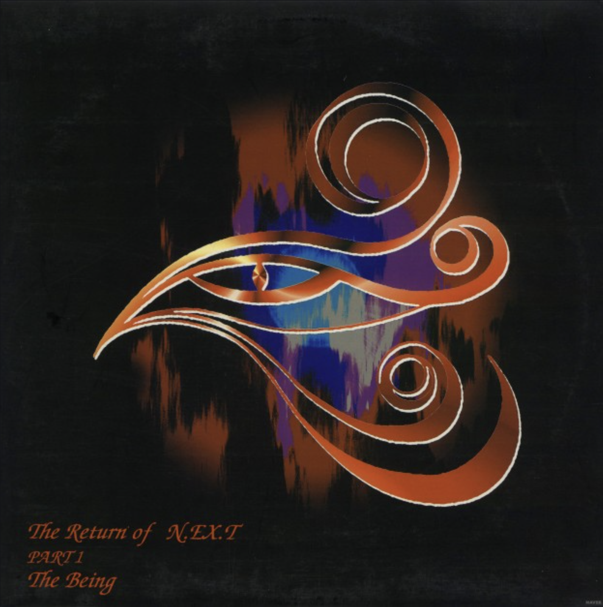
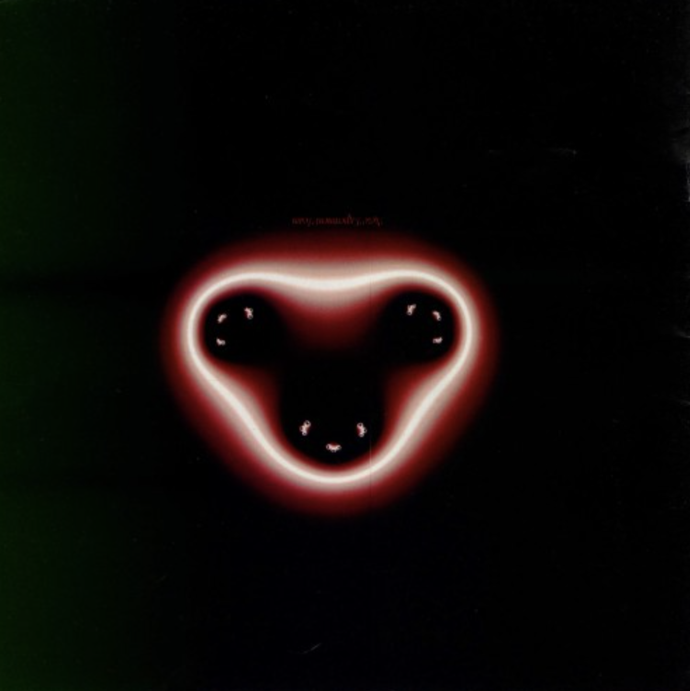
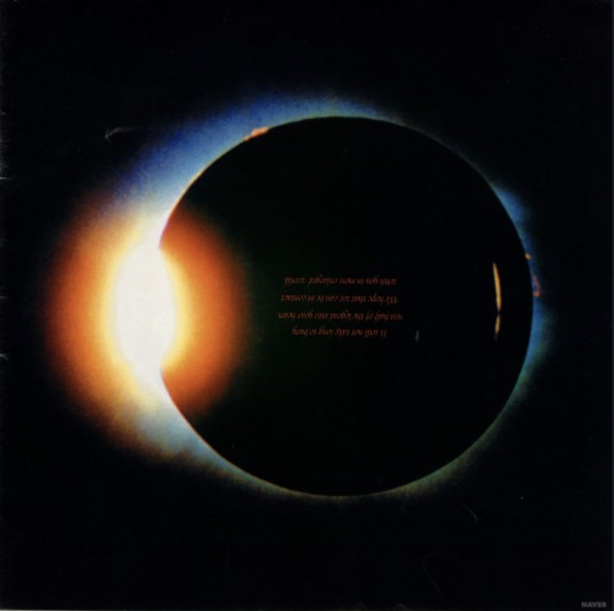
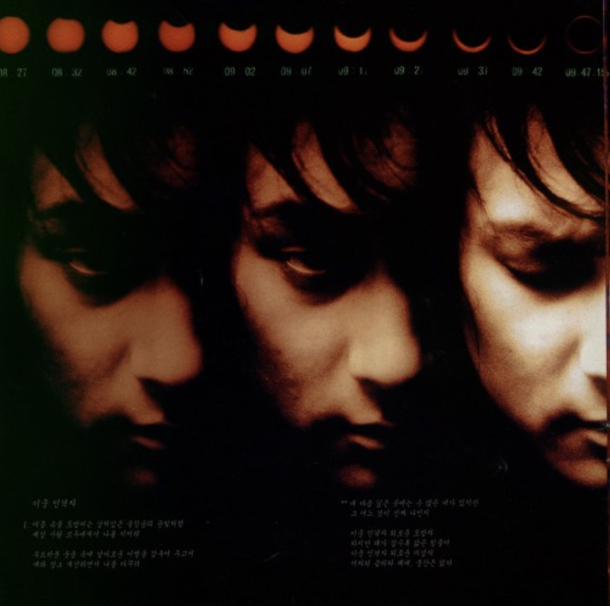
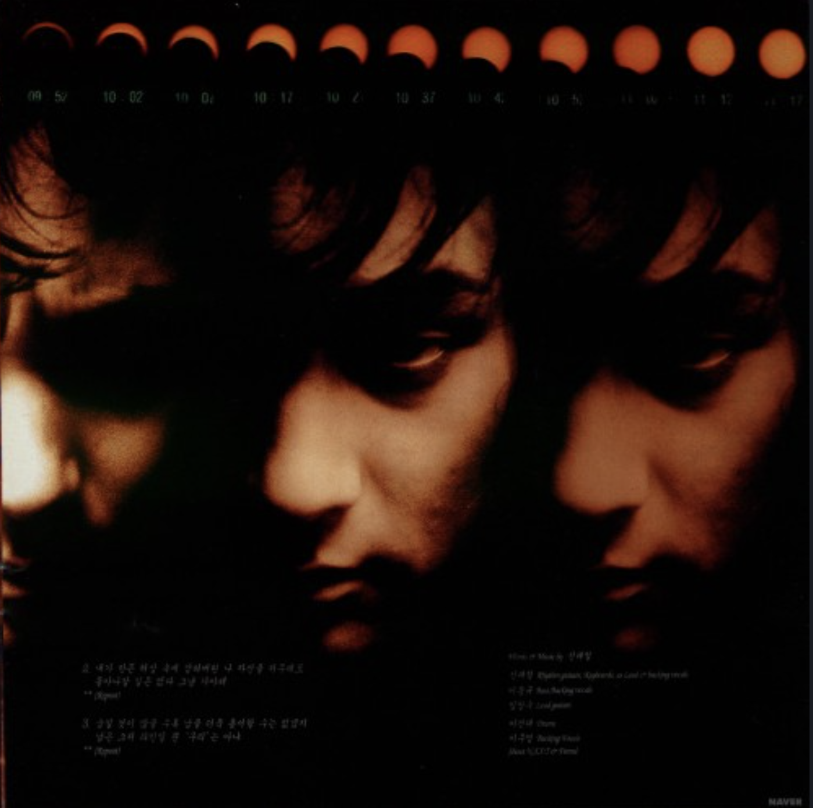
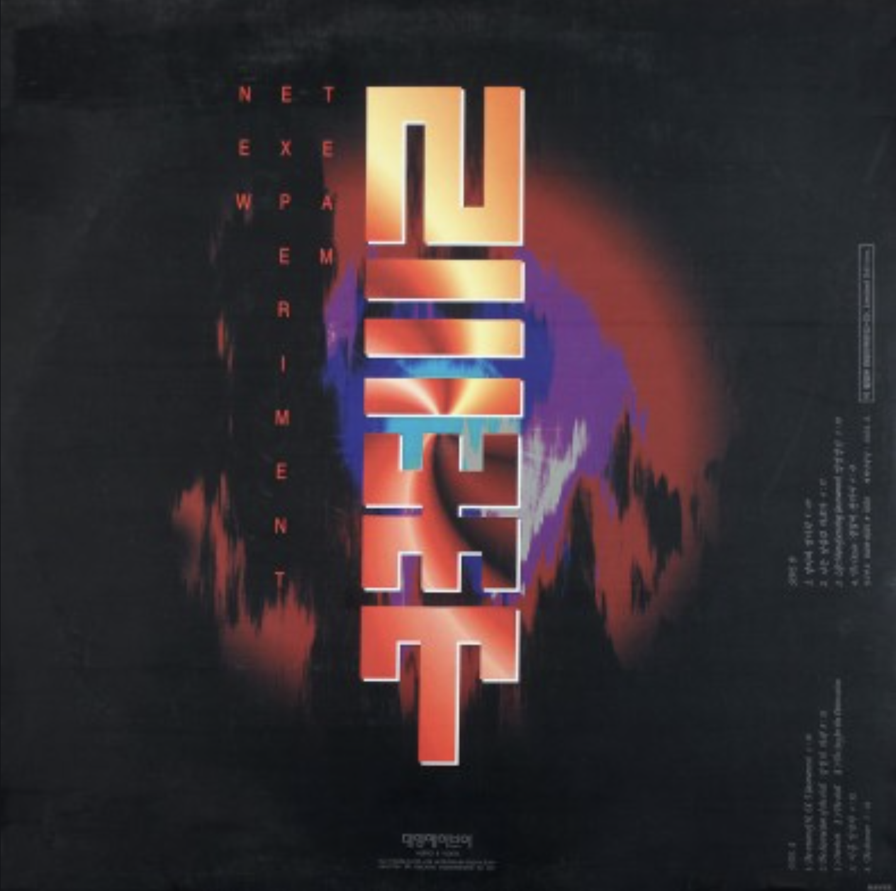

The Return of N.EX.T PART1 / The Being
<1994>
가수 소개
N.EX.T는 1991년 결성된 대한민국의 대표 록 밴드로, 보컬 신해철을 중심으로 활동하며 실험적인 음악과 강한 세계관으로 큰 사랑을 받았다. 수많은 멤버 교체와 팀 개편을 거쳤으며, 신해철 사망 이후에는 정규 활동이 사실상 중단되었다. 현재는 신해철을 기리는 추모 공연과 프로젝트 중심으로 이름이 이어지고 있다.
앨범소개
The Return of N.EX.T Part 1: The Being은 넥스트 2기의 시작을 알린 콘셉트 앨범으로, 삶과 죽음을 주제로 한 강렬한 프로그레시브 메탈 사운드가 특징이다. ‘껍질의 파괴’, ‘날아라 병아리’ 등의 곡으로 대중성과 음악성을 모두 인정받았으며, 음악그룹 최초로 CIP와 마인드맵 개념을 도입하고 28장의 디지털 합성 속지 디자인을 선보여 앨범 아트워크의 새로운 전형을 제시했다. 한국 록 음악의 대표 명반 중 하나로 평가된다.
🎵





